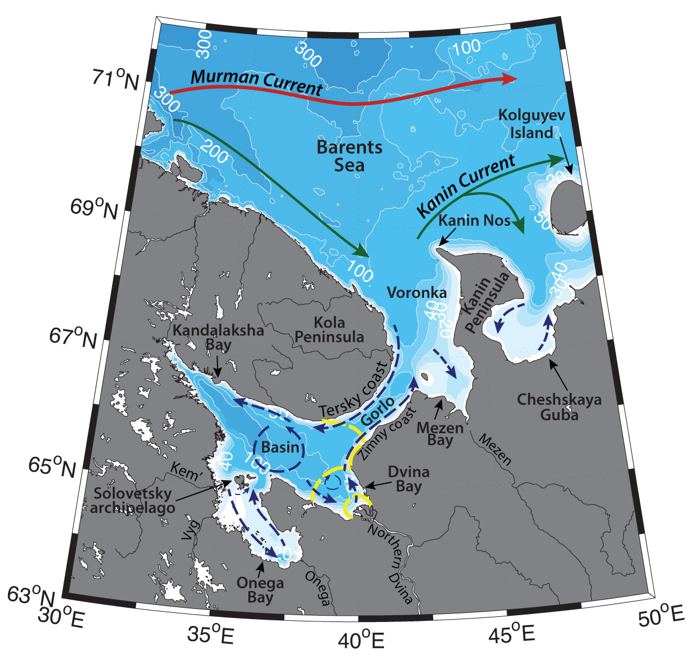

Schematic water circulation patterns and geographical place names in the White Sea region. Adopted from Dobrovolskyi & Zalogin (1982), Filatov et al. (2005), Kravchishina et al. (2015). Dashed line marks the studied region.
The White Sea is a shallow inner Russian Arctic sea, it is semi-enclosed in a long gulf south-east of the Kola Peninsula. It has four large bays (Mezen, Dvina, Onega and Kandalaksha) and is joined to the Barents Sea by a strait between Cape Kanin and the Kola peninsula. The mean depth of the White Sea is 67 m, the maximum depth is 350 m in the northeast part of the Kandalaksha Inlet (Dobrovolskyi & Zalogin, 1982).
Hydrography of the White Sea is determined by its geographical location and complicated bottom topography, and is mainly controlled by river discharge, strong tides, winds, and compensating flows (e.g. Filatov et al., 2005). The strait between the inner (Dvina, Onega, Kandalaksha bays and central part – “Basin”, the latter also known as “Bassein” in Russian; e.g. Filatov et al., 2005), and the outer parts (the Mezen Bay and Voronka strait, the latter is connected to the Barents Sea) of the White Sea is known as “Gorlo” of the White Sea. Gorlo Strait is relatively narrow (about 40 km width) and rather shallow, with depths about 50 m or less (the mean depth is 37 m). A shallow ridge in the northern part of the Gorlo hinders the water exchange between the inner and the outer parts of the White Sea. In the outer part of the White Sea the hydrography is largely influenced by the Barents Sea.
Despite the fact that White Sea is surrounded by land, its climate is transitional between continental and oceanic due to the influence of warm and salty Atlantic waters in the Barents Sea (see the sections on Barents Sea regions). Wind direction over the Barents Sea depends on the patterns of atmospheric circulation: north-eastern winds are caused by the high-pressure area over the sea and areas of low pressure to the south and south-east of it; high pressure over Northern Europe would in turn cause south-easterly winds over the White Sea (Dobrovolskyi & Zalogin, 1982).
Waters from the Barents Sea inflow into the outer part of the White Sea (Voronka and Mezen Bay) and from there through the Gorlo Strait into the inner part of the sea in a current along the northern part of strait. This current is also known as the “feeding” current, or Deriugin current. In the southern part (along the Zimny Coast) of the strait there is an outflow (“runoff” current, or Timonov current; Filatov et al., 2005), which dominates the water column and hinders tides during summertime, as it consists mainly of waters from Northern Dvina, Onega, Mezen, Kem and Vyg and other smaller rivers (Filatov et al., 2005).
Freshwater discharge (around 231 km3; Filatov et al., 2005) from the rivers govern the salinity in the sea. In general, the salinity of surface waters in the White Sea is rather low – around 24 to 27 (Berger & Naumov, 2000). During the flood season, river waters rise the sea level, and force an outflow from the White Sea into the Barents. During wintertime the overflow is restricted and the import of Barents Sea ice can bring particulate material and biogeochemical species into the White Sea. (Howland et al., 1999). Freshwater discharge forms local fronts between riverine and sea waters, and a prominent stratification. These fronts attract high concentrations of nutrients, phytoplankton and zooplankton and induce high productivity. Onega, Northern Dvina and Mezen rivers all bring warmer waters, compared to the open seawater; shallow shelf of the river estuaries also allows for early warming of the waters. Seasonal variation of temperature of the White Sea surface water might reach 20°C (14–15°C in Kandalaksha Bay; Howland et al., 1999). The vertical extension of the surface waters is controlled by the wind and convective mixing. Winter mixing bring the temperatures to 0°C through the water column, with the minimum temperatures in the near surface layer (e.g. around -1.2 °C – -1.7 °C in the Basin, Voronka and Gorlo; Filatov et al., 2005).
Seasonality of the Northern Dvina river runoff (with the peak runoff accounting for about 50% of the annual discharge in May – June; and minimum runoff in February – March) also modulates the direction of the inflow from the Gorlo Strait: in March the inflow from the Gorlo into the inner White Sea turns westwards to the Kandalaksha Bay, whereas in summer the main flow moves to the Dvina Bay. The outflow from the Dvina Bay is thought to divide into two branches: one follows the coast eastwards into the Gorlo, while the second is advected into the Basin and becomes involved into cyclonic circulation there (Filatov et al., 2005).
Various studies have argued about an existence of resulting anticyclonic circulation in the Basin. An anticyclonic eddy has been observed in the Dvina Bay as well, also known as Dvina Bay gyre. However, other research (e.g. Dobrovolskyi & Zalogin, 1982) manifest the cyclonic circulation in the Basin (Dobrovolskyi & Zalogin, 1982; Filatov et al., 2005). These differences in investigations could potentially be explained by changes due to tidal movements: circulation in the enclosed basin can change its sign (become cyclonic) during high tide (e.g. Fer and Widell, 2007; Filatov et al., 2005), but more research is needed.
As a result of winter mixing dense waters form in the “Gorlo” strait (also known as Gorlo Strait Water (GSW); e.g. Shapiro et al., 2003). They flow into the inner part of the sea and reside in the deep basin during wintertime. This Deep White Sea water mass have negative temperatures (roughly down to -1.4°C) and relatively high salinities (S = ~ 30) all year round (Howland et al., 1999). This water mass forms a compensating flow at depth to counteract the outflow of freshwater discharge at the surface, especially in March and July in the Dvina and Onega bays (Filatov et al., 2005). However, the shallow sill across the narrow “Gorlo” restricts the exchange of bottom waters to some degree. Dobrovolskyi & Zalogin (1982) have argued, that 2/3 of the deep-water volume in the White Sea is renewed each year. White Sea Intermediate Water (WSIW, -0.1<T<-1°C, salinity from 27.7 to 28.5 and more) is believed to be formed by previous winter cooling and salinization, and is advected from the Gorlo into the Basin along the Tersky Coast. It is lighter than GSW and occupies depth range below 25 m (Shapiro et al., 2003).
In summer the Gorlo water is strongly heated and mixed with fresh/low salinity waters, oftentimes until nearly complete thermal homogeneity. As a result of intense mixing of the waters in the Gorlo, a front is formed at the boundary with Basin. (e.g. Filatov et al., 2005) Unique circulation regime in the Gorlo strait is crucial phenomenon, which determines the ecosystem structure: it hinders the exchange in the bottom layers, while providing ventilation for the inner basin.
The water exchange in the White Sea and especially in the Gorlo is enhanced by the semidiurnal tides, with the amplitude increasing from 1 m on the south to 10 m in Mezen Bay – one of the largest amplitudes in the Arctic Ocean. There large areas of sea shore (up to 10 km width) being underwater and draining on a regular basis, seasonal ice cover from December to May is often piling and forming ridges. Freshwater discharge from Mezen and Kuloy rivers forms local fronts and areas with high salinity gradient. Fish in the Mezen bay can be driven offshore by the local atmospheric processes.
Tidal currents are rather weak in the open seas, in the Basin of the White Sea they are comparable with the speeds of persistent currents (10-15cm/s; Filatov et al., 2005); but they significantly strengthen in the bays. In Onega and Kandalaksha bays the speeds are 80-100 cm/s and 30-35cm/s, respectively. In the Gorlo Strait they are about 3 m high, velocities are about 100-120 m/s (but according to Filatov et al. (2005) can reach up to 250 cm/s – same as in Mezen Bay). Tides are stronger and higher along the Tersky coast (where there is an inflow of winter waters), compared to Zimny coast (where there is a runoff of river discharge). Tides enhance mixing and bring nutrients to the surface, but also hinder the inflow of Barents Sea water into the White Sea, as formation of the tidal bottom-boundary layer leads to a substantial increase in the energy dissipation. (Filatov et al., 2005)
During wintertime White Sea is covered with drifting ice, locally formed, as well as imported from the Barents Sea. In the inner part of White Sea ice starts to freeze up in October – November, with the earliest ice appearing in the Mezen Bay and latest in Gorlo along Tersky Coast and in Voronka. Ice cover usually lasts through May, first disappearing in Voronka region. Polynyas may form due to strong currents on the surface next to the shore.